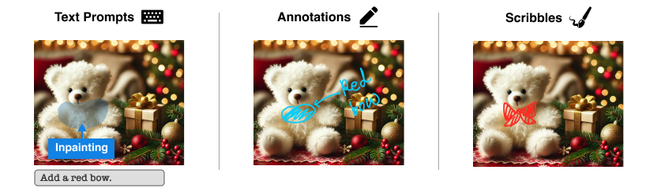

Exploring Visual Prompts: Refining Images with Scribbles and Annotations in Generative AI Image Tools

Authors. Hyerim Park, Malin Eiband, Andre Luckow, Michael Sedlmair
Venue. CHI (2025)
Abstract. Generative AI (GenAI) tools are increasingly integrated into design workflows. While text prompts remain the primary input method for GenAI image tools, designers often struggle to craft effective ones. Moreover, research has primarily focused on input methods for ideation, with limited attention to refinement tasks. This study explores designers' preferences for three input methods - text prompts, annotations, and scribbles - through a preliminary digital paper-based study with seven professional designers. Designers preferred annotations for spatial adjustments and referencing in-image elements, while scribbles were favored for specifying attributes such as shape, size, and position, often combined with other methods. Text prompts excelled at providing detailed descriptions or when designers sought greater GenAI creativity. However, designers expressed concerns about AI misinterpreting annotations and scribbles and the effort needed to create effective text prompts. These insights inform GenAI interface design to better support refinement tasks, align with workflows, and enhance communication with AI systems.